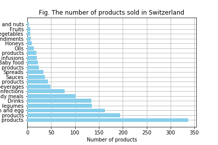

At an era where more and more ecological questions have risen, it seems that European countries, such as Switzerland or France,
are trying to encourage the sale of their national products within their own territory and reduce the importation of alimentary goods.
Indeed, one can easily notice that swiss supermarkets are promoting regional products, with labels such as “Aus der Region” in order
to answer a growing request from customers to buy local products.
However, are these few changes a simple superficial trend, or do we really import fewer goods? The research conducted for the lecture
Applied Data Analysis at the EPFL intends to determine the origin of most products we consume within Switzerland and in general,
to give an overview of the income of resources from other countries to Switzerland, taking into account information as the origin
of the ingredients and the place of manufacture.
The research was conducted with the help of the database Open Food Facts,
which provides origin information about products that are consumed in different countries around the world.
List the categories of products in Europe
Categories of products consumed in Switzerland
And the final answer is...